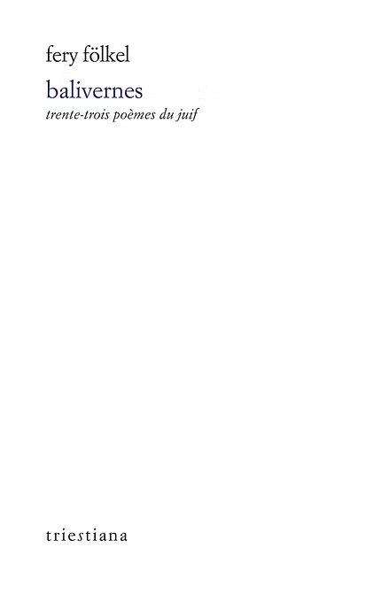

Fery Fölkel, Balivernes
La poésie de Ferruccio (Fery) Fölkel (1921-2002) appartient à une aire qui s’étend de l’Adriatique aux confins de l’empire austro-hongrois d’antan, celle d’une Mitteleuropa riche de ses traditions juives et de ses langues. Animé d’une nostalgie qu’il disait « féroce », et l’esprit vif, concis, voire irascible, Fölkel ne cessa d’exprimer l’amour d’un monde qui n’est plus et en est aimé d’autant plus. Son unique recueil strictement poétique, Balivernes, établit un dialogue à la fois émouvant et âpre avec soi-même et avec l'Histoire, en mémoire des lieux d’une lignée paternelle et de cérémonies fastueuses ou funèbres, réelles ou imaginaires, pour une passion civique inapaisée.
Date de parution : novembre 2022
Traduit du triestin par Laurent Feneyrou et Pietro Milli
Préface d'Elvio Guagnini, postface de Laurent Feneyrou
200 pages
Prix : 18€